From Isolation to Inclusion
Introducing the Multidimensional Transport Poverty Index tool
Rosa Félix
CERIS, Instituto Superior Técnico
University of Lisbon
Mauricio Orozco-Fontalvo
Gonçalo F. Matos
Miguel Alvelos
Camila Garcia
Filipe Moura
July 2026 — NECTAR 2026, Munich
Why Transport Poverty?
Transport Poverty
Transportation is essential — its absence or inadequacy creates:
- 🚫 Limited access to work, education, health, leisure, services and opportunities
- 🏘️ Social exclusion & territorial inequality
- 💸 Disproportionate financial burden on low-income households
- ☠️ Unequal exposure to road risk
Transport Poverty (Lucas et al. 2016) has direct consequences in social exclusion and territorial cohesion (Pritchard et al. 2014; Allen and Farber 2019; Mejia-Dorantes and Murauskaite-Bull 2022)
EU Regulation 2023/955 (Social Climate Fund) provides the first legally binding definition of Transport Poverty at European scale (European Parliament and the Council of the European Union 2023)
A Multidimensional Problem
Based on Lucas et al. (2016), Mejia-Dorantes and Murauskaite-Bull (2022) and the European Commission (2024):
🗺️ Accessibility
Ability to reach work, health, education, and other essential services within reasonable time
🚌 Mobility
Quality of transport supply: frequency, coverage, travel times, active travel infrastructure
💶 Affordability
Households’ capacity to afford transport (+ housing) relative to income
🦺 Exposure to Externalities
Exposure to road externalities: safety, crash severity, air pollution, noise
What is Missing?
- ❌ No composite index integrating all 4 dimensions, across multiple transport modes
- ❌ Existing indexes rely on costly primary data (surveys)
- ❌ No operational tool translating research into policy support
👉 We wanted to create an index
Multi-dimentional · Multi-modal · Scalable · Replicable
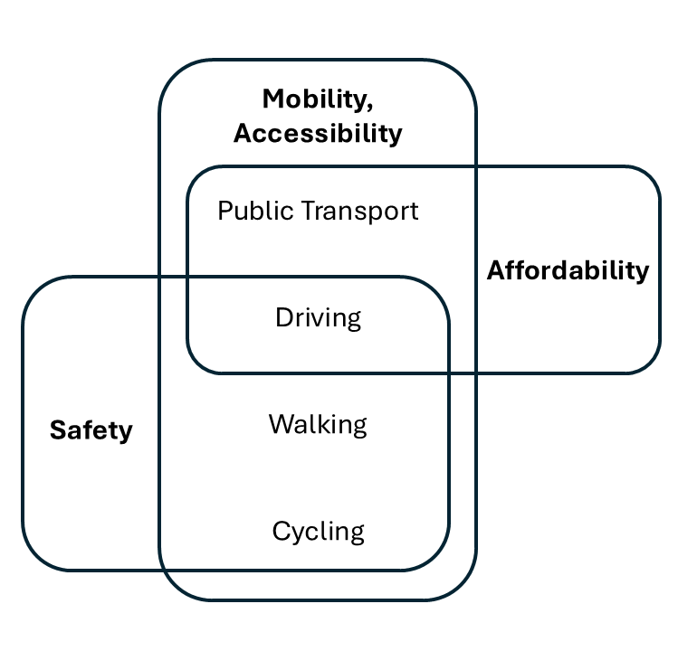
Methodology
Case Study: Lisbon Metropolitan Area
- Polycentric structure (strong employment / opportunities core in Lisbon)
- Strong urban/peripheral PT supply contrast
- High car modal share in periphery
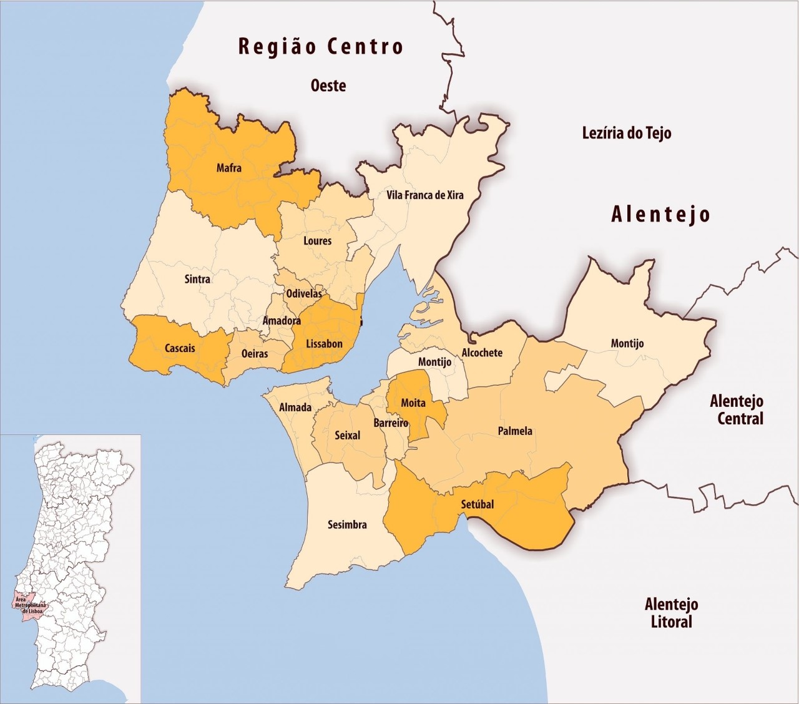
- 18 municipalities · 124 parishes · ~2.8M inhabitants, 3,000 km²
- Analysis unit: freguesia (parish) — lowest admin level with full data coverage
- Also computed at municipality and H3 grid level, resolution 8 (~3,686 hexagons)
Open Data
| Source | Used for |
|---|---|
| INE Census 2021 / IMOB 2017 | Income, housing, commuting OD pairs, modal share |
| OpenStreetMap | Road network, cycling/pedestrian infra, POIs |
| GTFS (9 operators) | PT frequency, travel times, coverage |
| ANSR (road safety) | Accident locations and severity (2019-2023) |
| Carris Metropolitana | Health centres, schools |
| PMMUS / TML | Shared mobility docks |
| GlobalBuildingAtlas | Buildings height (population density) |
All computations done in R using odjitter, r5r, accessibility, sf, tidytransit, FactoMineR (Carlino and Lovelace 2022; Pereira et al. 2021; Pereira and Herszenhut 2022)
Computing Accessibility
- Travel time matrix for all modes × all H3 res 8 grid cells
- 📍 Points of interest: healthcare, schools, groceries, green spaces, recreation, jobs
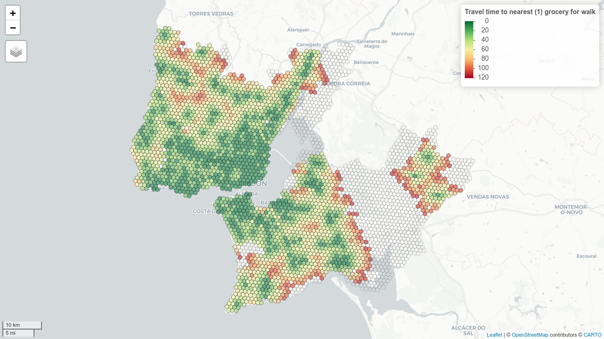
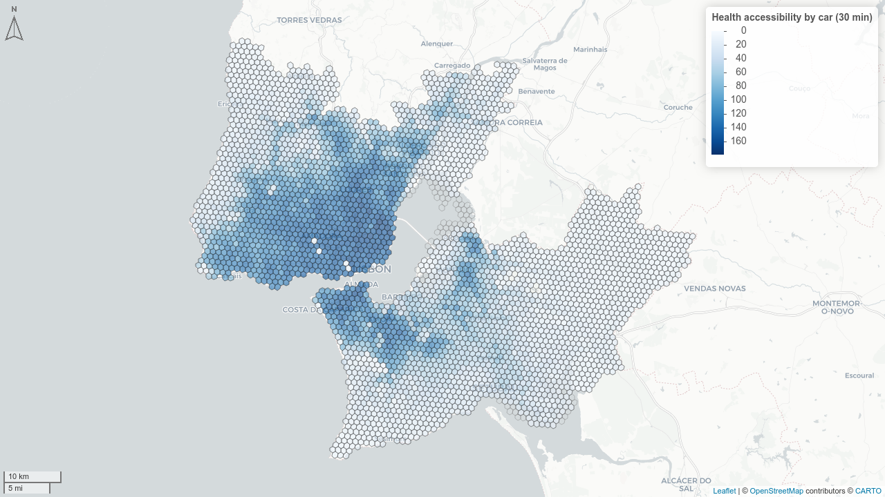
Computing Mobility
Systemic quality of the transport system:
- ⌛💼 Average commuting time (by mode)
- 🔁 Average transfers (public transport)
- 🕑 PT headways (peak / off-peak / night / weekend)
- 🚏 PT population coverage (walking isochrones to stops)
- 🚴 Cycling and pedestrian infrastructure ratio (from OSM)
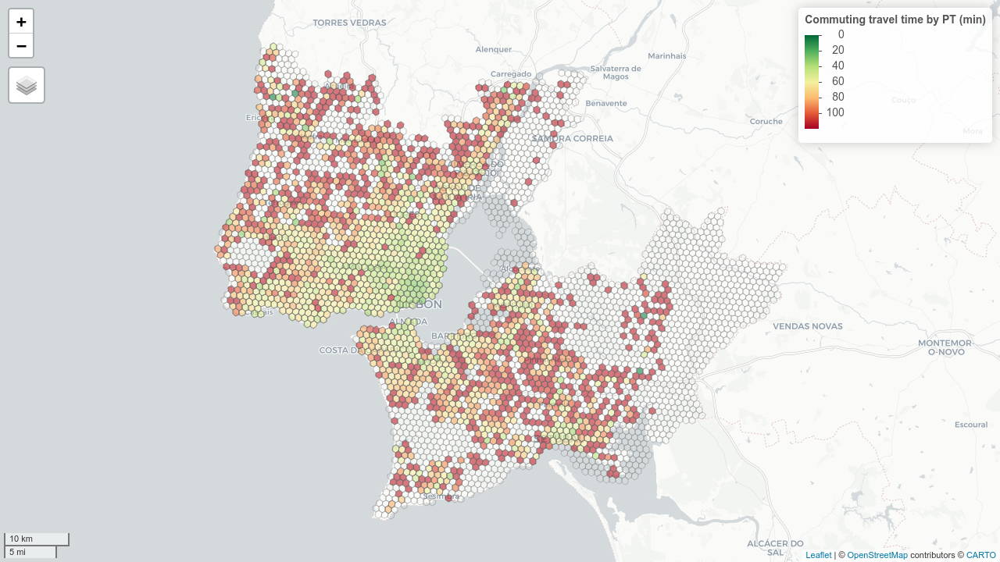
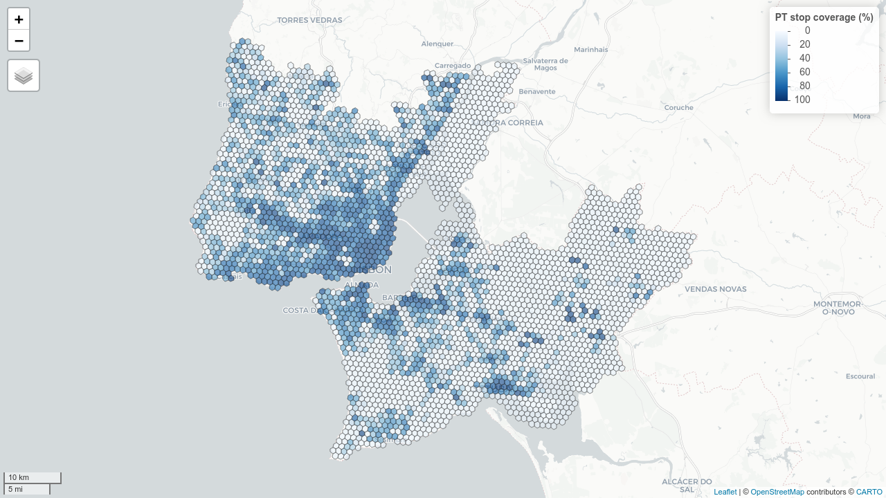
Computing Affordability
“Housing + transport costs ≤ 45% of income” threshold (Isalou et al. 2014; Litman 2026)
\[transp\_inc\_comp = \frac{HH_{size} \cdot P_{mobile}}{I_{household}} \cdot \left[\frac{C_{car,day}}{O} \cdot \frac{s_{car}}{\Sigma s} + C_{PT,day} \cdot \frac{s_{PT}}{\Sigma s}\right] \cdot N_{working\_days}\]
- Car cost: €0.40/km + tolls (via Infraestruturas de Portugal routing)
- PT cost: single ticket (~€1.91) or monthly pass Navegante (~€25.25/month)
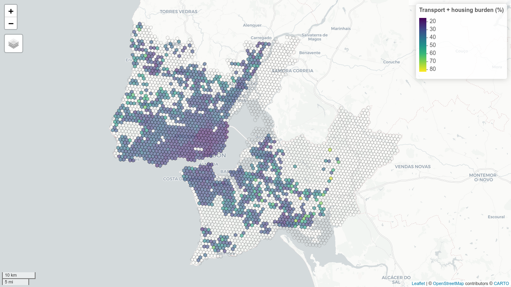
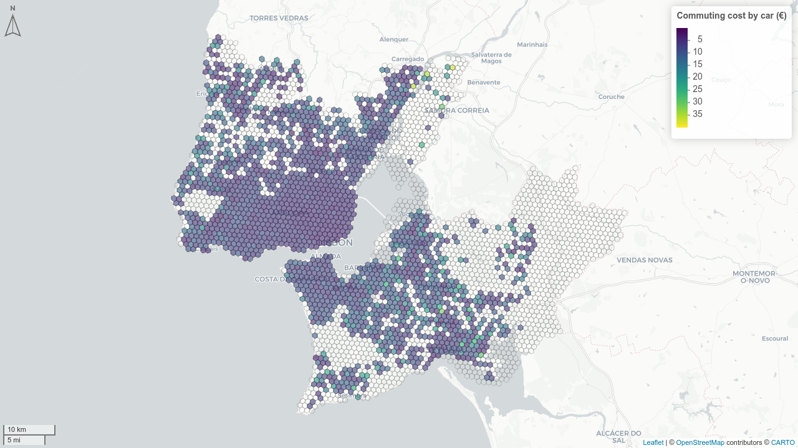
Computing Safety
Based on ANSR road accident data (2019–2023), within-locality crashes only:
| Indicator | Formula |
|---|---|
| Accident rate | \(\sum Acc_{5y} / Pop \times 1000\) |
| Fatality rate | \(\sum MV_{30d} / Pop \times 1000\) |
| Severity index | \(\sum MV_{30d} / \sum Victims_{5y}\) |
| Mode-specific severity | fatalities / vehicles of that mode involved |
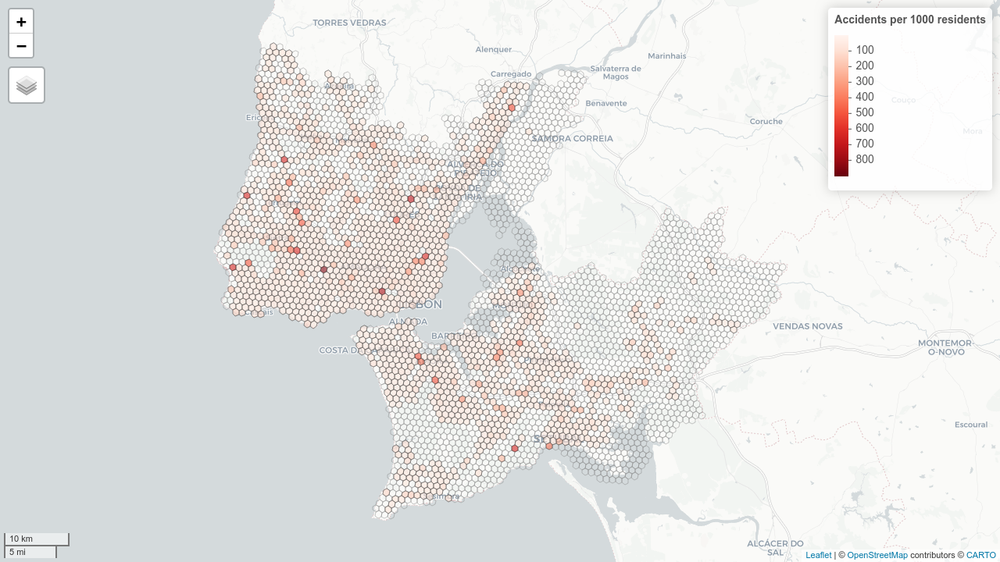
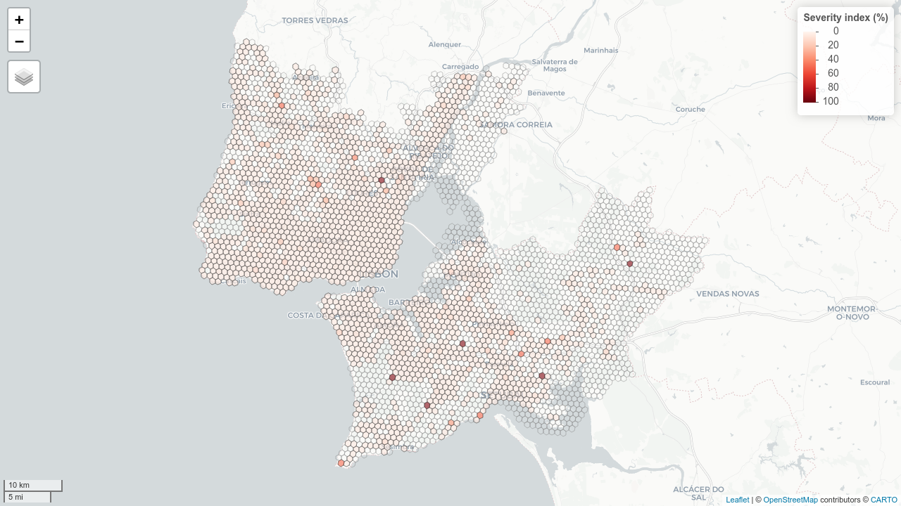
Normalization & Aggregation
All indicators (>1700) normalized to [0, 100] using min-max scaling, depending if is a cost or a benefit:
\[X_{norm} = \frac{X - X_{min}}{X_{max} - X_{min}} \times 100\ \text{ or }\ X_{norm} = \frac{X_{max} - X}{X_{max} - X_{min}} \times 100\]
Intra-dimension: PCA (PC1 score) aggregates multiple indicators (OECD et al. 2008)
Inter-dimensional aggregation
| Variant | Method | Best for |
|---|---|---|
| 🔵 Contrasting | Entropy-weighted mean | Territorial contrast |
| 🔴 Critical | Geometric mean | Worst-dimension penalization |
| 🟡 Balanced | Arithmetic mean | Compensatory / communication |
| ⚙️ Custom | Analytic Hierarchy Process (AHP) weighting | Decision-maker preferences |
The IMPT Dashboard
Dashboard: 🎮 Live Demo
Available at:
🔗 ushift.pt/apps/impt
Features:
- 🗺️ Interactive maps at parish, municipality & grid scales
- 📊 All dimensions × transport modes × indicators
- ⚙️ Political IMPT: user-defined AHP weights
- 📥 Downloadable results (>1700 indicators)
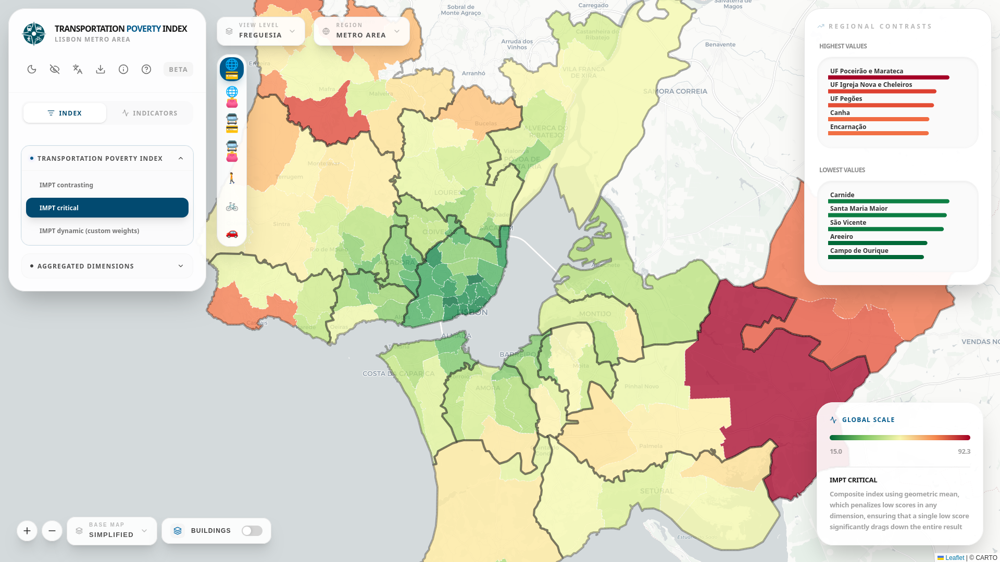
Results
🗺️ Accessibility
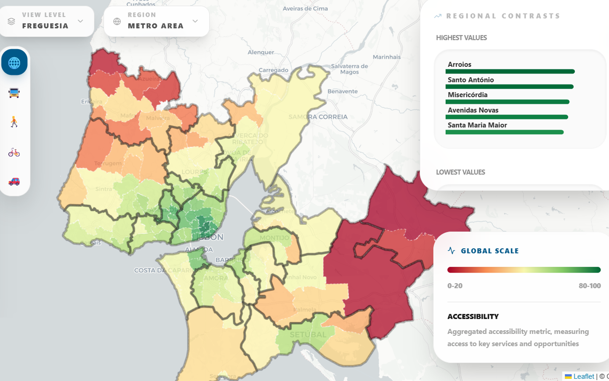
- High accessibility in the center
- Deficiencies concentrated in rural/low-density areas
🚌 Mobility
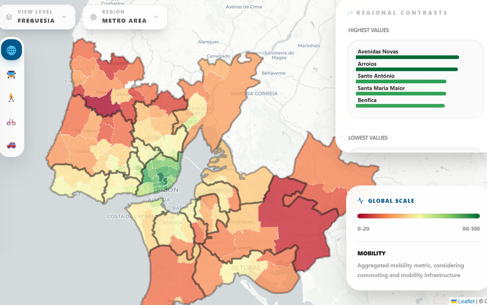
- Low scores in most AML except the center
- Periphery is severely underserved
- Highlights the radial structure of the LMA
Mobility justice?
💶 Affordability
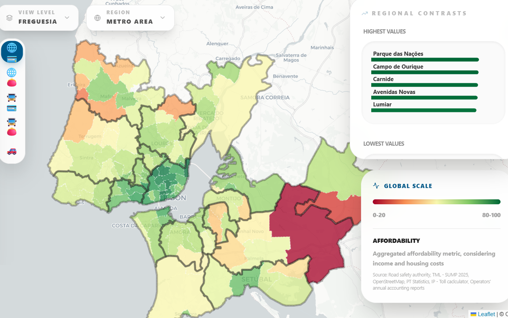
- High scores overall
- The Navegante monthly pass greatly mitigates costs (inexpensive)
- Worst cases in low-income, car-dependent areas
- Housing more expensive where Transportation is more affordable and vice-versa
🦺 Safety
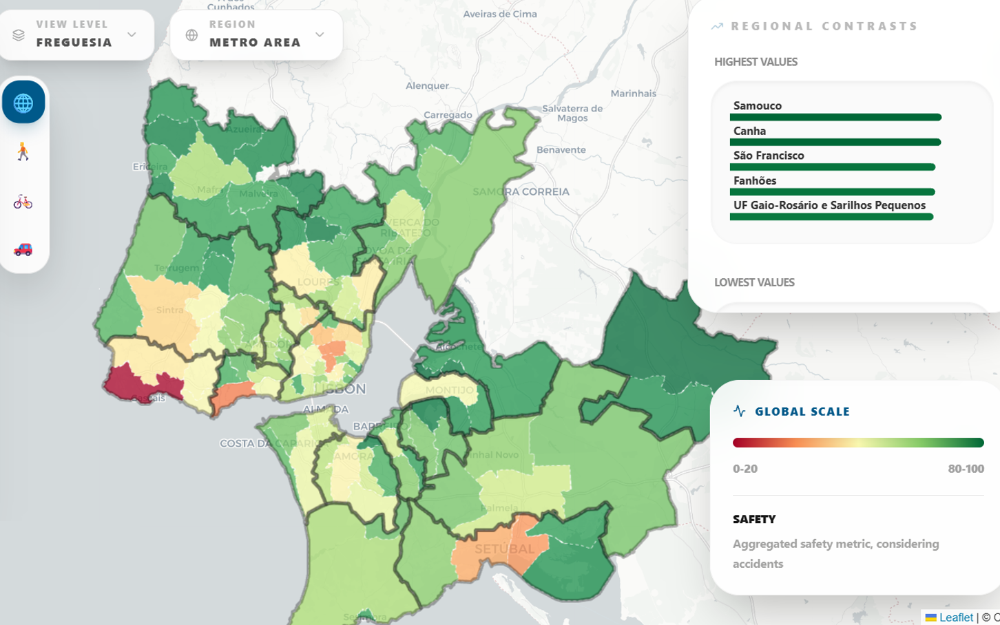
- Urban core scores poorly (high volume of crashes): inverse spatial pattern
- Worst rates in coastal EN6 corridor (Oeiras/Cascais), and Lisbon centre, with very high incomes
IMPT Index: Three Aggregation Methods
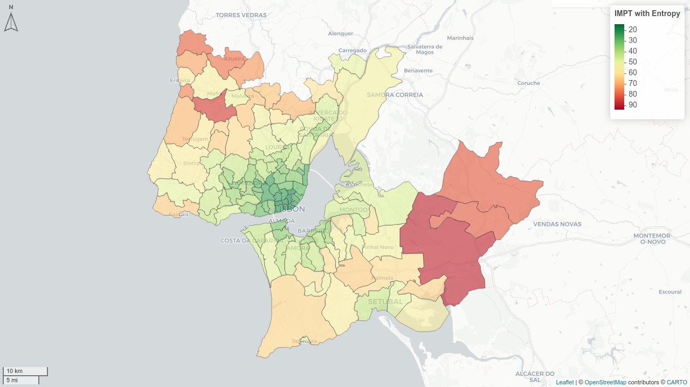
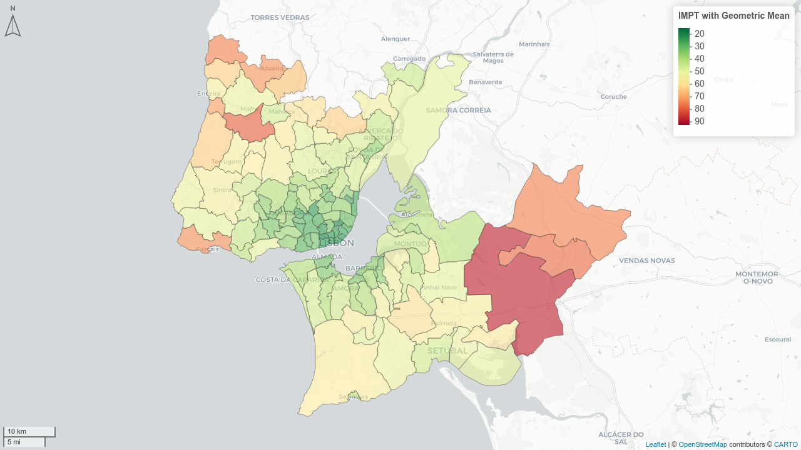
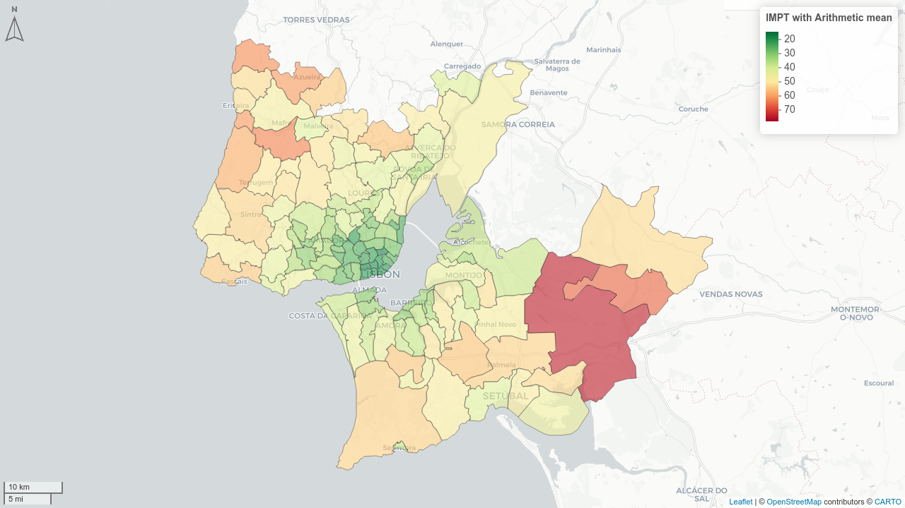
All modes · Parish level · Higher score = higher transport poverty
The Critical IMPT (geometric mean) is best for identifying specific dimensional deficiencies
Validation
Workshop with Municipalities
- 13/18 municipalities represented + transport authorities + operators
- Participants assessed transport poverty levels in their territories and compared with IMPT scores
Result: Higher convergence than expected for a secondary-data index
Stakeholders were very optimistic regarding transport poverty in their territories
Main divergence: Safety — participants systematically underestimated crash risks in their territories
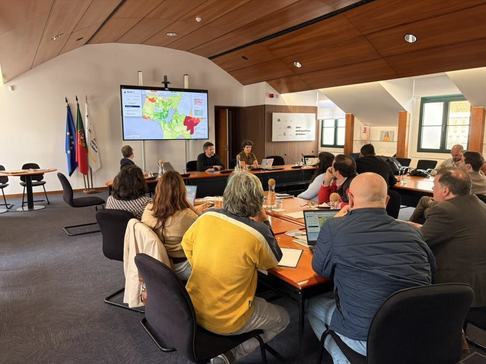
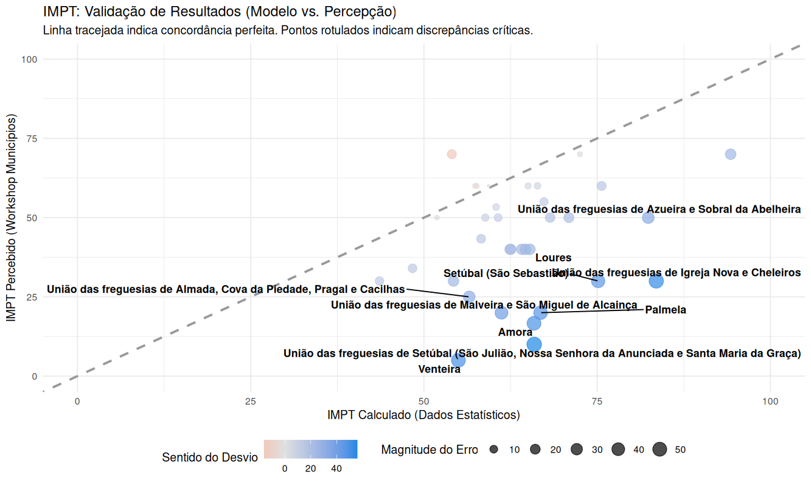
Conclusions
The IMPT allows
- To diagnose the territory and quantify transport poverty
- To support decision-makers in prioritizing interventions and investments
- To compute transport poverty disregarding the indicators available
- To compute transport poverty at different scales (region, city, parish, grid)
Contributions
- First multi-dimensional, multi-modal composite index of Transport Poverty for Portugal
- 4 dimensions (Accessibility, Mobility, Affordability, Safety) × 4 transport modes × 3 aggregation methods
- Entirely based on open, replicable data
- Policy-ready: AHP weighting + interactive dashboard
- Validated with stakeholders
- Replicable to other metropolitan areas
Limitations
- Affordability: too few indicators for PCA
- Digital literacy dimension dropped (data gaps)
- Environmental externalities not included (air pollution)
Future Work
- 🌍 Transferability: application to other metropolitan areas
- 🧠 Include perceived transport poverty as a dimension
- 💨 Include air pollution and noise exposure as environmental externalities
- 📡 Longitudinal monitoring: IMPT updates as data becomes available (eg.APIs) to assess interventions’ impacts
Thank you!
Rosa Félix
✉️ ushift@tecnico.ulisboa.pt
💾 Methodological Report: u-shift.github.io/IMPT-data
🌐 Dashboard and Data: ushift.pt/apps/impt
📄 Paper in preparation

This research was funded by Science4Policy, a PLANAPP - Centre for Planning and Evaluation of Public Policies iniciative to support the definition and implementation of public policies based on scientific evidence, under the Science4Policy (S4P): Concurso de Estudos de Ciência para as Políticas Públicas call (PLANAPP-S4P/8042/2025).
This research was funded in part by the FCT - Fundação para a Ciência e Tecnologia under Grant UID/6438/2025 of the research unit CERIS.
References

Orozco-Fontalvo, Félix, Matos, Alvelos, Garcia, Moura — NECTAR ’26 Conference, Munich